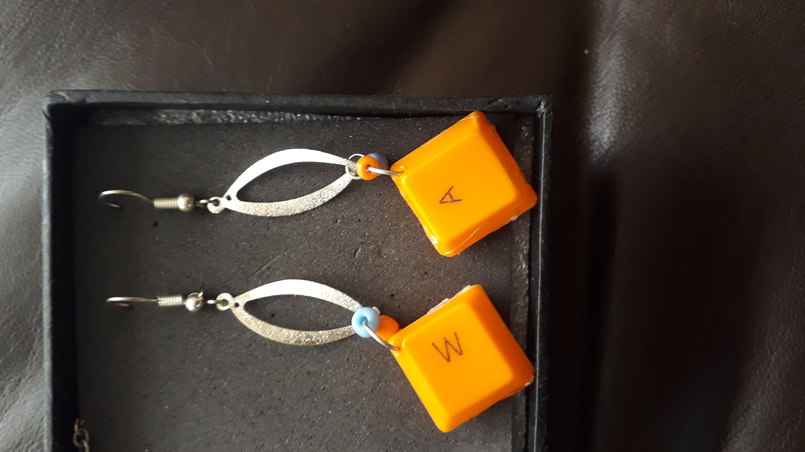

Aretes con teclas de computadora
Materiales
 teclas
teclas argollas
argollas- 1 ganchito para el arete
 alicate
alicate pinzas
pinzas punsones
punsones
Instrucciones
- primeramente limpiar la tecla
- lugo utilizar el pulson para hacer el hueco a la teclas
- luego una vez listo ponemos la argolla con la pinsa y los ganchillos
- ahi esta listo los aretes
- y decorarlo al gusto de la persona